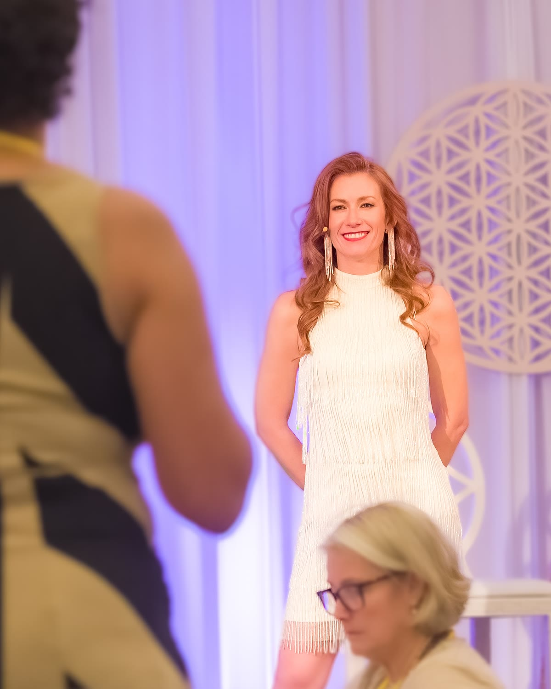

Book Tamara to speak
Relatable, intuitive and transformational, from the first five minutes.
Tamara Rose speaks to rooms full of high-achieving women who are tired of working this hard. She makes energy practical, makes the room laugh at its own humanity and leaves people with something they can feel shift before they walk out the door.

What audiences feel.
Tamara has facilitated more than 20,000 hours of live sessions, events and trainings, for audiences from intimate retreats to full conference rooms. She was the number one sales rep in the western US for a Fortune 500 company before she built her own, so she speaks the language of high performers, and she's lived the burnout on the other side of it.
Tamara can tailor any talk to any audience.
Here are a few of the topics past organizers have chosen…
The Energetics of Achievement: Creating Success Without Sacrifice
Why high achievers burn out, and how to keep the results while dropping the cost. Your audience learns why alignment decides what shows up far more than effort does, and leaves with one practice to start that day.
Best for women's leadership conferences, sales teams and entrepreneur summits.
Have Your Mindset Shifts Stick
Every woman in the room has had a breakthrough that faded by Tuesday. This talk explains why change snaps back, what the nervous system has to do with it and how to make a shift permanent.
Best for retreats, wellness events and personal development audiences.
The Power of No
For the women who say yes to everyone else first. A warm, funny and very direct look at boundaries as an energy practice, and at what opens up when you stop overgiving.
Best for women's networks, ERGs and mothers' groups.
From Hustle to Harmony
Hustle culture taught us that ease is earned after exhaustion. Tamara shows the room how to build a business and a life on flow instead of force, from someone who learned it the hard way.
Best for business owners, coaches and creative entrepreneurs.
In person or virtual, keynote to full day.
- Keynote, 30 to 60 minutes, with a live experiential moment the room remembers.
- Workshop, 90 minutes to half a day, with guided practice and Q&A.
- Retreat facilitation, a full day or a weekend, including clearings.
- Podcast and virtual summits, as a guest or a featured conversation.
What people say after…
My biggest breakthrough was coming in feeling small and having that be my trained reality, and stepping into who I am, which is an energetic giant.
I came here looking for clarity, getting stronger with my intuition, and taking my business to a whole new level, and I got so much of that. I'm literally lit up.
She brings a lot of play and enthusiasm. A playfulness that makes you laugh at your own humanity and makes you willing to take the first step.
For event organizers…
How do I check availability?
Send a speaking inquiry. You'll book a free 20-minute call where we talk through your audience, date, format and goals, and you'll have a proposal within a few days.
Is there a speaker kit?
Yes. A bio, headshots, talk descriptions and an introduction script are available on request; ask on your inquiry call or email connect@thebeyondhumanmethod.com.
Does Tamara travel?
Yes. She's based in Colorado and speaks in person across the US, and virtually anywhere.
Prefer email? Write to connect@thebeyondhumanmethod.com.